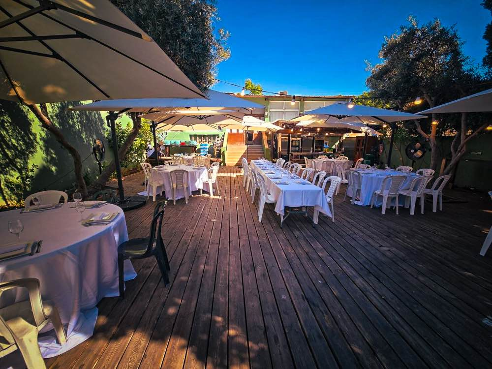

Le Rav
Chabbat
Offices
שערי ציון
Galerie
Dons
Contact
שערי ציון
Fondée dans la tradition · Neve Tzedek
Shaaré Tsion
« Voici la porte de l'Éternel ; les justes y entreront. »
Horaires du Chabbat

Le jardin — nos réceptions et célébrations
Chabbat · Parashat Reéh
Allumage des bougies
19:12
Sortie du Chabbat
20:11
Offices en semaine
Sha'harit (matin)
08:15
Sha'harit · Chabbat
09:00